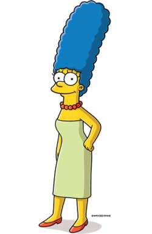
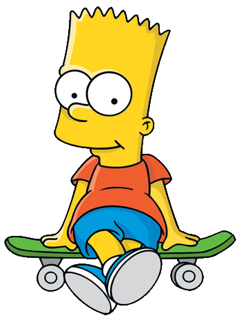

Батько родини, гладкий, лисий, ледачий і не дуже розумний. Він часто поводиться абсурдно, егоїстично і нетактовно, втім, залишається симпатичним.

Домогосподарка, майже весь час проводить вдома, доглядаючи за наймолодшою дитиною Меґґі, а також за Бартом і Лісою, і навіть за чоловіком. Її найвідоміша особливість — блакитне волосся, зібране у високу зачіску.
10-літній син Гомера і Мардж Сімпсон, найстарша дитина в сім'ї, втіллення образу непослуха, бешкетника і посереднього учня в школі.
